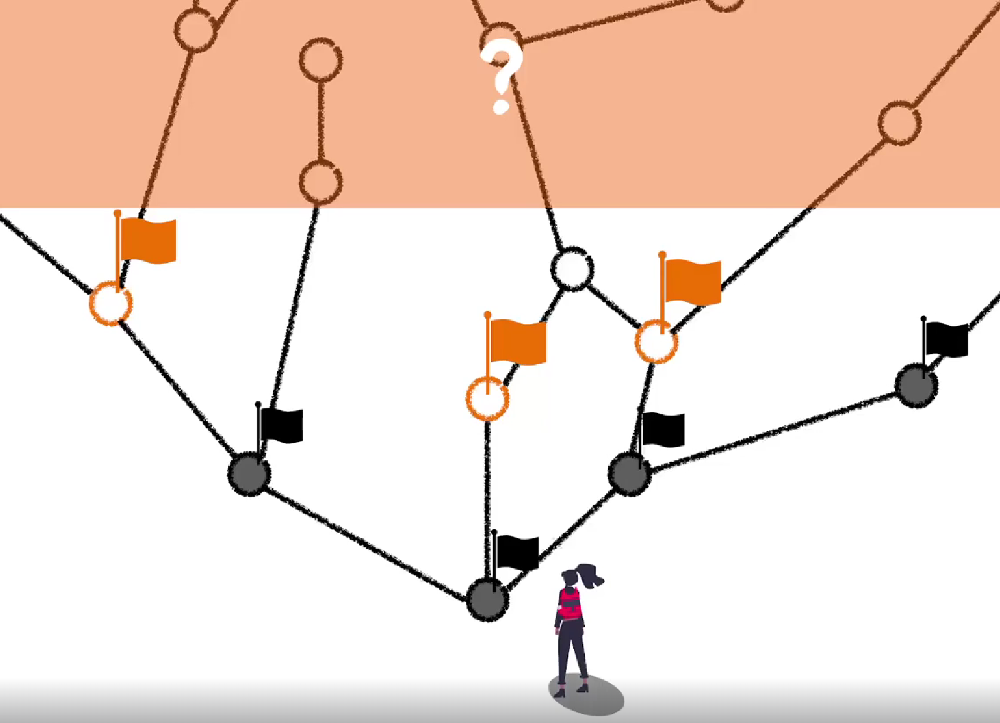

무엇을 모르는지 아는 것
효율적으로 학습을 하려면 어떻게 접근하면 좋을지에 대한 이야기를 합니다.

우리가 이것들을 구분해 놓고 이 영역을 어떻게 넓혀나갈 것인가에 대한 관점으로 접근을 하면 좋습니다.
키워드 기반으로 접근하기
학습이 마무리가 되고 키워드로 정리를 하면 나중에 찾아보기 좋습니다.
Last modified: 18 1월 2024
효율적으로 학습을 하려면 어떻게 접근하면 좋을지에 대한 이야기를 합니다.

우리가 이것들을 구분해 놓고 이 영역을 어떻게 넓혀나갈 것인가에 대한 관점으로 접근을 하면 좋습니다.
학습이 마무리가 되고 키워드로 정리를 하면 나중에 찾아보기 좋습니다.